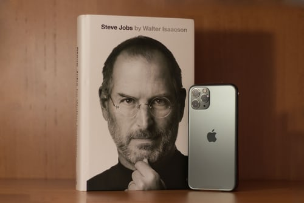
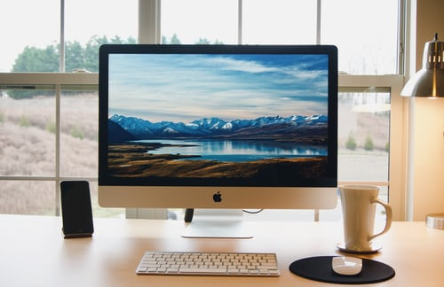
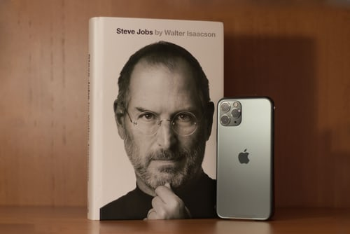
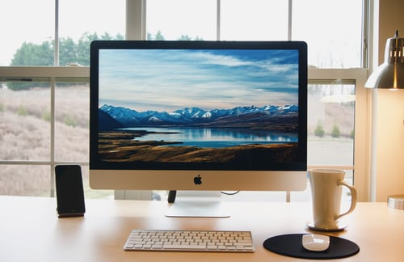
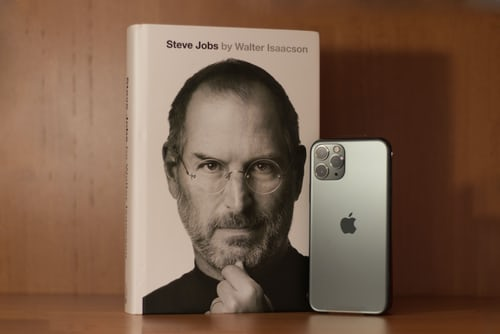
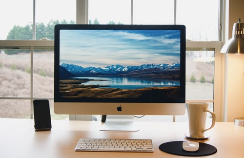

Біографія Стіва Джобса
Рік народження нашого героя – 1955. Місце – Сан-Франциско, Каліфорнія. Біологічні батьки Джобса (сирієць і німкеня за походженням) відмовилися від сина через тиждень після його появи на світ. Дитина була усиновлена подружжям з міста Маунтін-В'ю, які дали йому своє прізвище. Прийомний батько Стіва був автомеханіком за професією: він ремонтував старі машини і намагався прищепити своєму синові любов до механіки. Стіва заняття в гаражі не надихали, але саме через ремонт автомобілів він познайомився з основами електроніки.Заняття в школі теж не особливо подобалися Стівену, що позначалося на його поведінці. Лише одна вчителька з прізвища Хілл помітила у хлопця неабиякі здібності; весь викладацький склад вважав його пустуном і неробою.Міс Хілл вдалося стимулювати тягу Стіва до знань хабарами у вигляді солодощів і грошей. Незабаром процес навчання так залучив Джобса, що він став прагнути до утворення сам, без додаткового заохочення. Підсумок: блискуче здані іспити, які дозволили хлопчику перейти з 4-го класу одразу у сьомий. Перший персональний комп'ютер (примітивний за теперішніх часів програмований калькулятор) Стів Джобс побачив у науково-дослідному клубі компанії Hewlett-Packard, куди його запрошував сусід – інженер. Тринадцятирічний підліток став учасником гуртка винахідників: його першим проектом став цифровий частотомір, зацікавив самого засновника компанії HP – Білла Хьюлетта. Захоплення того часу були не чужі молодому винахіднику – він спілкувався з хіпі, слухав Боба Ділана і «Бітлз» і навіть вживав ЛСД, з-за чого мав конфлікти з батьком. Незабаром у нього з'явився старший товариш – Стів Возняк, який другом на все життя і багато в чому визначив долю юного генія. Першим спільним проектом цієї пари стало пристрій, назване Blue Box («Синя коробка»), що дозволяє зламувати телефонні коди і здійснювати безкоштовні телефонні дзвінки по всьому світу.
Відома цитата
"Щоб досягти простоти, необхідно прорити тунель в надрах якої складності."


Відома цитата
" Ми знаходимося тут, щоб внести свій вклад в цей світ."
Топ 10 цікавих фактівв про Стівена Джобса
- Справжні мати і батько Стіва кинули його, коли він народився, і його виховали Клара і Пол Джобс. Їх герой і вважає своїми рідними батьками.
- Джобс не отримав вищої освіти, він кинув коледж з причини фінансових проблем батьків.
- Коли Стів вчився в коледжі, йому доводилося не раз здавати пивні пляшки, харчуватися в їдальні у кришнаїтів і спати на підлозі — засобів до існування у нього майже не було.
- Джобс не вживав в їжу м’ясні продукти.
- Стів їздив на автомобілі Mercedes SL55 AMG, який не мав номерів і паркував машину на стоянках для інвалідів.
- Розмір ноги у Джобса вельми значний — 48-й.
- Apple — компанія, одним з творців якої був Джобс, заснована 1 квітня, в день сміху.
- ПК Apple Lisa назвали на честь його доньки Лізи
- Був час, коли Стів отримував в Apple зарплату в розмірі 1 долара, просто щоб була можливість оплачувати медичну страховку.
- Улюблені предмети одягу з гардеробу Джобса: джинси Levi’s 501 синього кольору, водолазка фірми St. Croix і кросівки моделі New Balance 992.